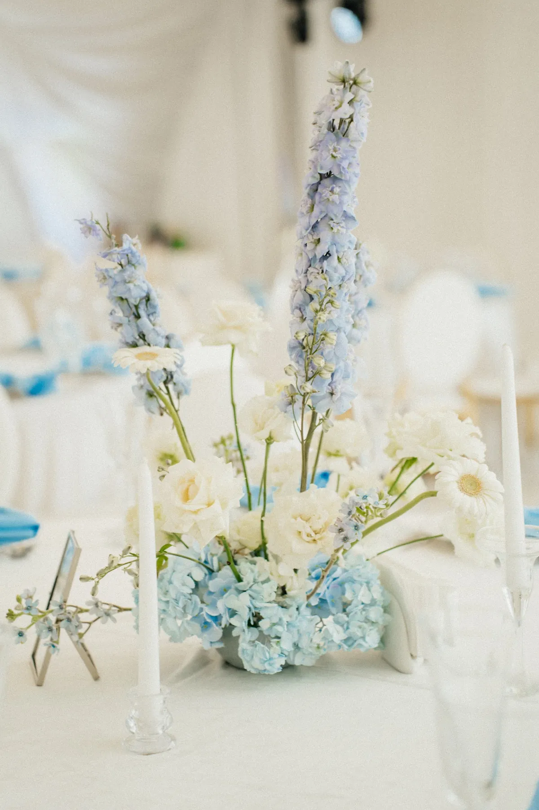
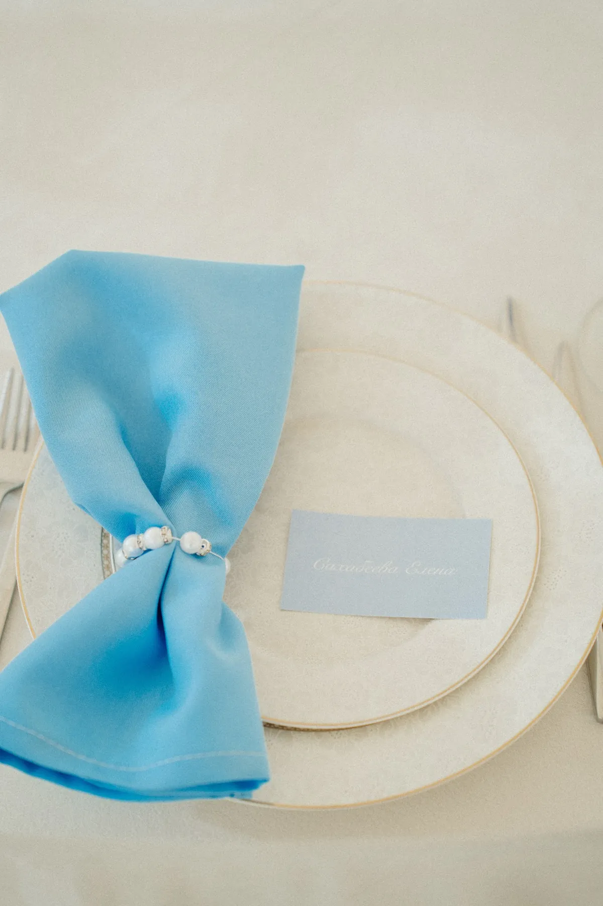

Голубая свадьба — это воздух, лето и лёгкость. Но у неё есть ловушка: слишком много голубого делает зал холодным. Рассказываем, как работать с этим цветом, чтобы палитра оставалась свежей и тёплой, — на примере нашей бело-голубой свадьбы.
Какой голубой выбрать
- Небесный — светлый, воздушный. Работает как нежный фон и хорош для лета.
- Васильковый — насыщеннее и глубже. Им хорошо делать акценты: отдельные цветы, ленты, салфетки.
- Пыльно-голубой — серый, приглушённый. Подходит для ткани и драпировки, спокойнее смотрится вечером.
Лучше сочетать два-три оттенка одного цвета: от светлого до более глубокого — получается объём, а палитра остаётся цельной.

С чем сочетать голубой
С белым — основа. Белый делает голубой чище и выразительнее, а зал — светлее.
С айвори и кремовым — теплее, чем чисто-белый: убирает «холод».
С серебром, стеклом и свечами — прозрачные, блестящие детали поддерживают свежесть. Вечером свечи добавляют тёплые точки света.
С зеленью — делает палитру живой и летней.
Совет: если хочется тепла, добавьте один тёплый акцент — кремовые цветы или свечи. Голубой без тёплых нот легко уходит в холодную гамму.

Где повторять голубой
Голубых цветов в природе не так много, поэтому цвет часто поддерживают текстилем и деталями. Что можно сделать голубым:
- Флористика — арка, композиции у президиума, высокие цветы на столах (в нашем кейсе — дельфиниум и голубые цветы вместе с белыми).
- Текстиль — ткань на столе пары, салфетки, дорожки.
- Детали — карточки гостей, ленты, номера столов.
- Полиграфия — приглашения и план рассадки.
Чем больше мест, где голубой повторяется, тем сильнее он читается как идея, а не как случайность. Подробнее о том, как расставить акценты, — в статье про цвет свадьбы.


Пример: «Голубая арка»
Бело-голубая свадьба на загородной площадке. Главный объект — круглая арка, полностью собранная из голубых и белых цветов: днём она стоит на террасе на фоне деревьев, вечером светится. Тот же голубой повторяется у президиума, в ткани, в высоких композициях и в салфетках на столах. Подробнее — в кейсе «Голубая арка». О формах арок — в статье про свадебную арку.
Как заказать
Расскажите о дате и площадке — предложим оттенки голубого под ваш зал и свет и посчитаем смету.
Частые вопросы
Какие цветы выбрать для голубой свадьбы?
Сочетайте голубые цветы с белыми: так палитра выглядит чище. Какие именно сорта будут в хорошем качестве в вашу дату, подскажет флорист.
Голубая свадьба подойдёт для зимы?
Да, холодные оттенки хорошо сочетаются со свечами и тёплым светом. Для зимы лучше брать более глубокие и приглушённые голубые.
Как не получить слишком холодный зал?
Добавьте тёплую белую основу — айвори, кремовый — и свечи. Один-два тёплых акцента убирают лишний холод.